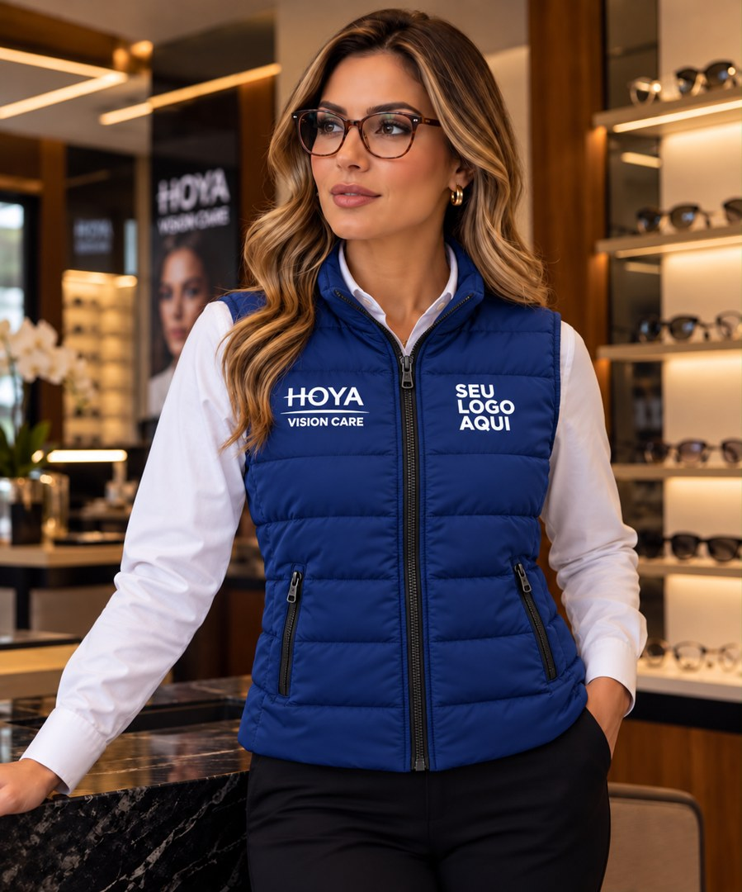
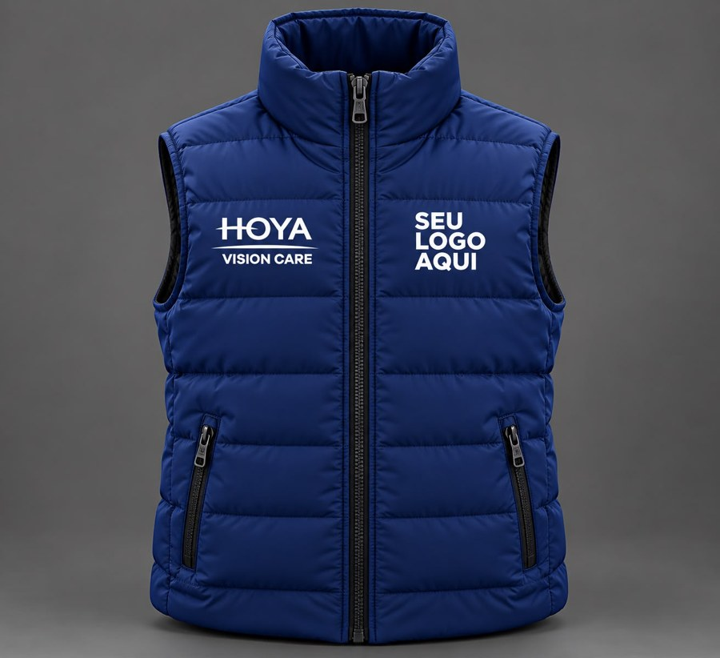
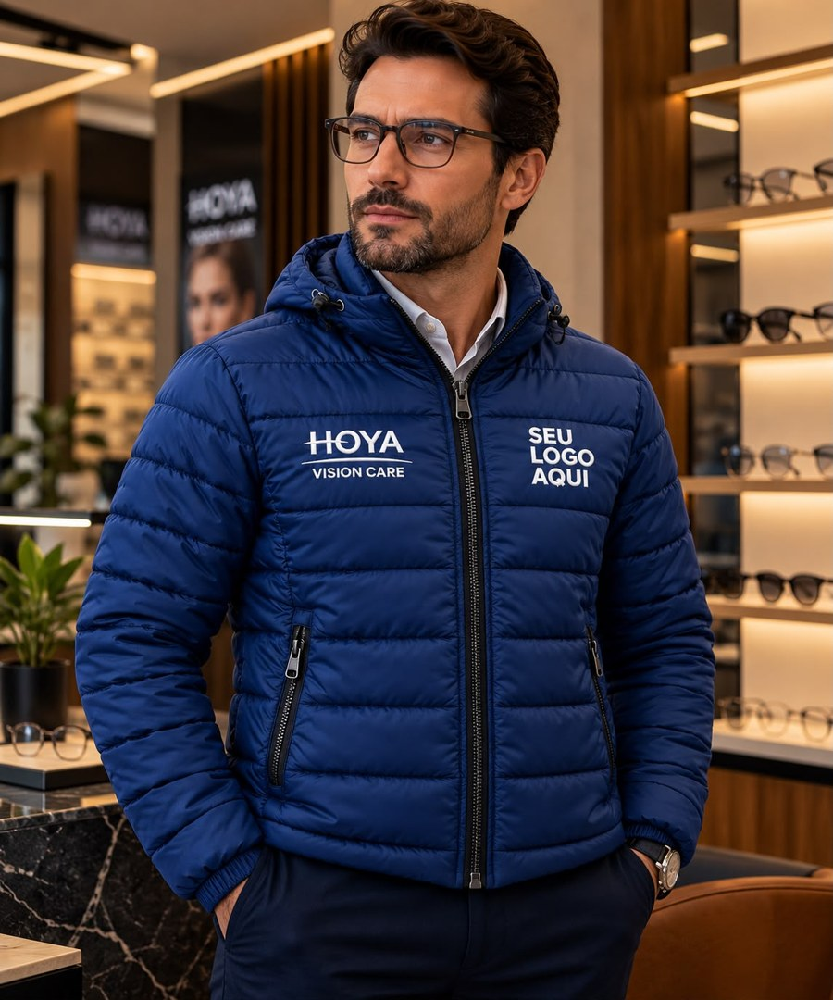
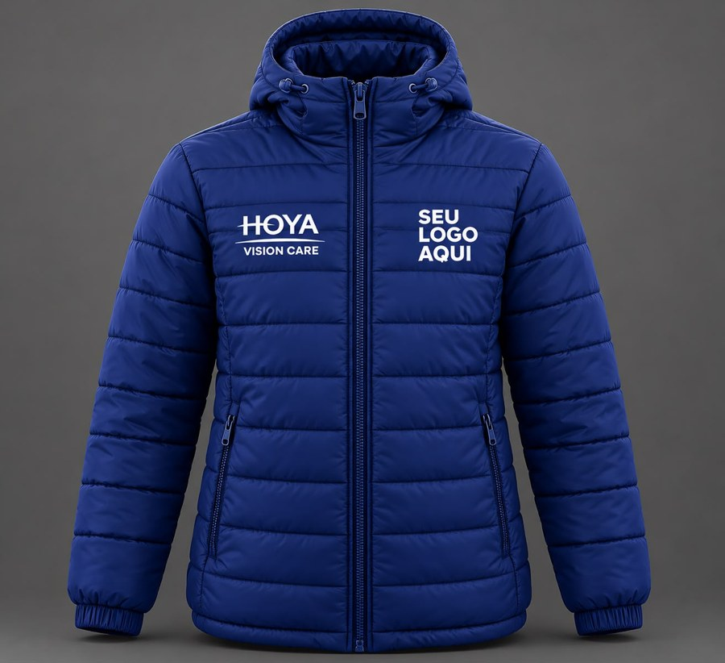
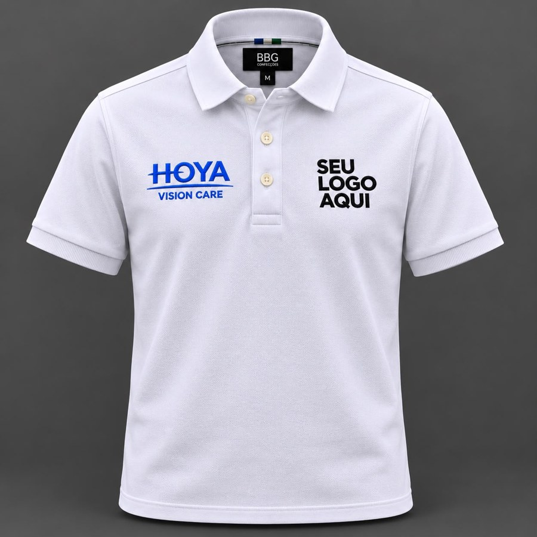
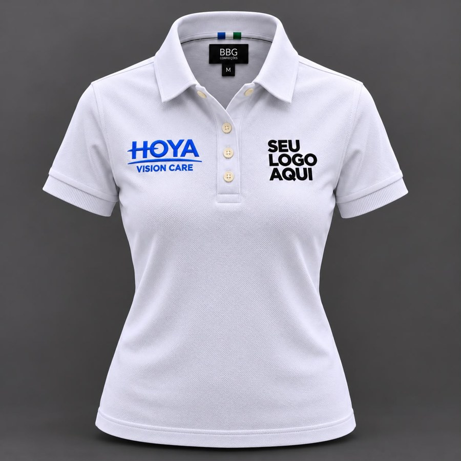
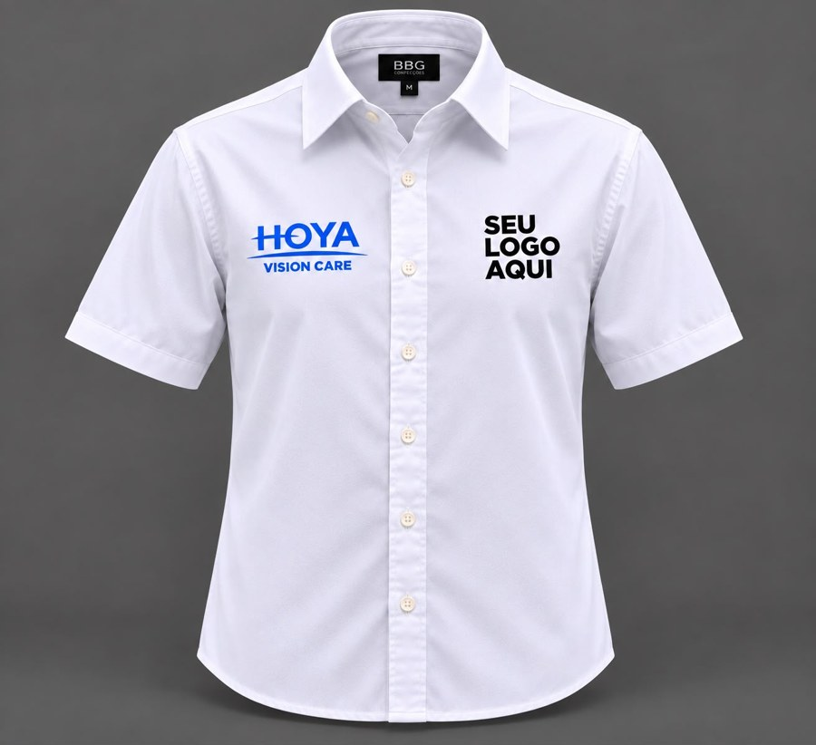
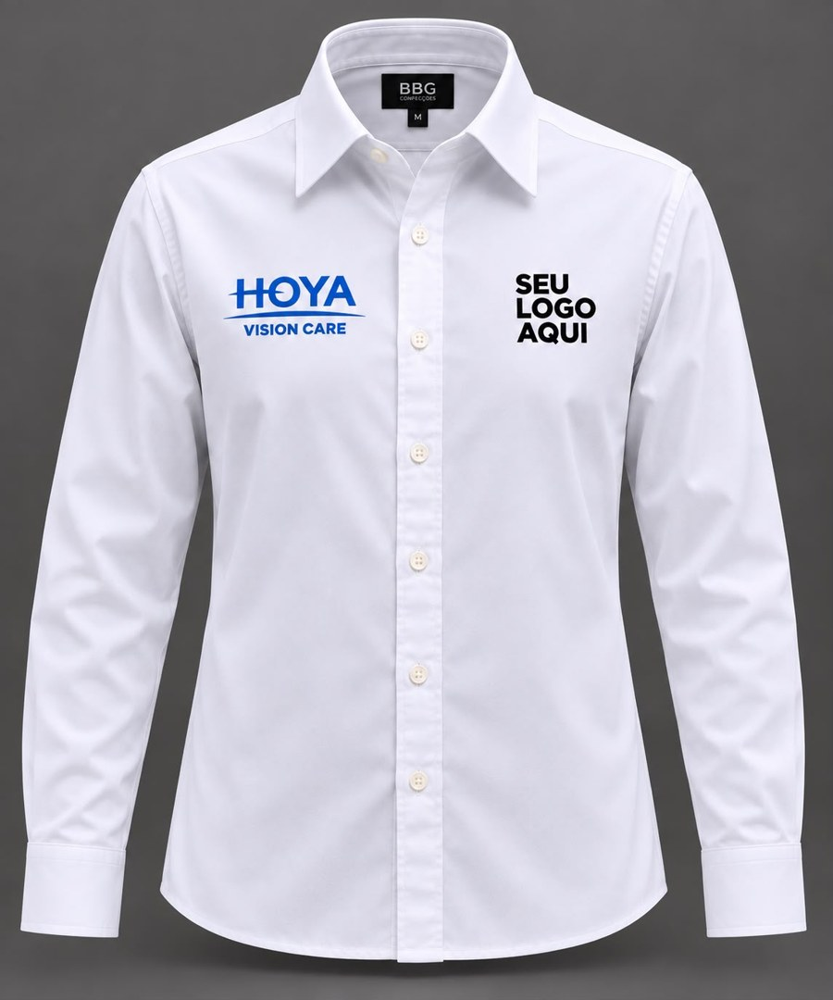
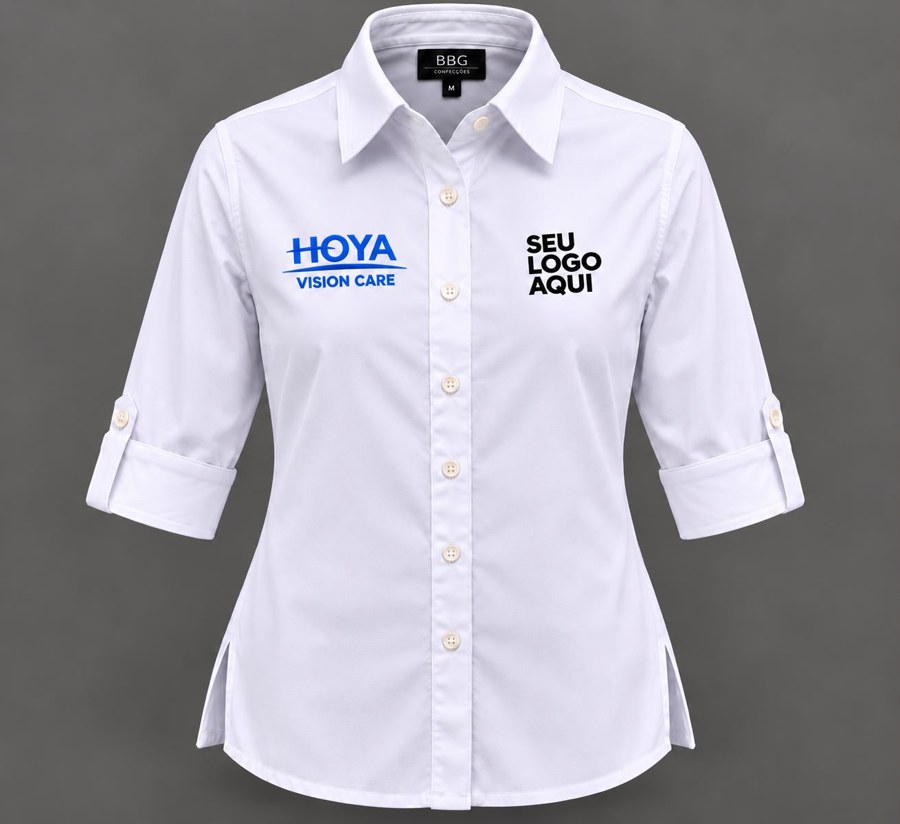
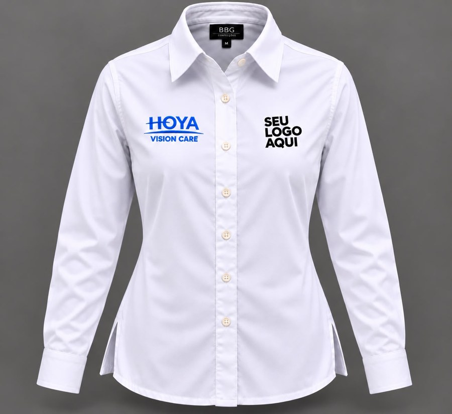

Camisa feminina manga longa
Camisa de manga longa com a identidade da sua ótica em cada detalhe.
O cuidado com o cliente começa na apresentação. Conheça a linha de uniformes HOYA produzida pela BBG, com peças para o dia a dia da sua equipe e personalização com a marca da sua ótica.
Conheça as peçasCamisas, polos e peças para os dias mais frios. Escolha os modelos que combinam com a rotina da sua equipe.
Camisa de manga longa com a identidade da sua ótica em cada detalhe.
Camisa de manga ¾ com personalização para a sua equipe.
Uma apresentação alinhada à sua equipe, com personalização em bordado.
Uma opção de manga curta para o dia a dia de atendimento na sua ótica.
Praticidade e uma apresentação alinhada à equipe, com a marca da sua ótica em cada detalhe.
Uma opção versátil para o dia a dia de atendimento, com personalização em bordado.
Uma opção para os dias mais frios, mantendo a identidade visual da sua equipe.
Uma camada adicional para acompanhar a rotina da ótica e complementar o uniforme.
A personalização da sua ótica será apresentada em um layout para aprovação antes da produção.
A BBG acompanha a escolha das peças e a aprovação de cada detalhe.
Conte quais modelos deseja e as quantidades de interesse. Nossa equipe prepara sua proposta.
Receba o layout com a personalização em bordado. Se não tiver o logo em arquivo, ajudamos a prepará-lo como cortesia.
Aprove o layout final e confirme quantidades e tamanhos por item para seguirmos com a produção.
Clique em Solicitar orçamento para falar com Rodrigo pelo WhatsApp. A mensagem já identifica a peça escolhida; complete os dados da sua ótica e as quantidades de interesse. Você também pode escrever para comercial@grupobbg.com.br.
Não há pedido mínimo. As condições variam conforme a quantidade de cada modelo: até 29 peças, de 30 a 199 e a partir de 200 peças.
Solicite à BBG a tabela de medidas do modelo escolhido. As medidas são apresentadas em centímetros, com tolerância de ± 2 cm.
O prazo é confirmado na proposta, conforme as peças e quantidades do pedido. O frete é calculado à parte e fica por conta do cliente.
Fale com a BBG e receba uma proposta para a linha HOYA, personalizada para a sua ótica.
comercial@grupobbg.com.br

A tabela de medidas deste modelo será confirmada pela BBG na proposta. Fale conosco para escolher os tamanhos da sua equipe.


A tabela de medidas deste modelo será confirmada pela BBG na proposta. Fale conosco para escolher os tamanhos da sua equipe.

| Medida | PP/36 | P/38 | M/40 | G/42 | GG/44 |
|---|---|---|---|---|---|
| Busto | 53 | 55 | 57 | 59 | 61 |
| Cintura | 53 | 55 | 57 | 59 | 61 |
| Barra | 53 | 55 | 57 | 59 | 61 |
| Comprimento do corpo | 61 | 63 | 65 | 67 | 69 |
| Comprimento da manga | 19 | 20 | 21 | 22 | 23 |
Tolerância de ± 2 cm. Meça a peça em superfície plana; as larguras não são circunferências. O colarinho é medido em circunferência.

| Medida | PP/36 | P/38 | M/40 | G/42 | GG/44 |
|---|---|---|---|---|---|
| Busto | 41 | 43 | 45 | 47 | 49 |
| Cintura | 38 | 40 | 42 | 44 | 46 |
| Barra | 43 | 45 | 47 | 49 | 51 |
| Comprimento do corpo | 51 | 53 | 55 | 57 | 59 |
| Comprimento da manga | 12 | 13 | 14 | 15 | 16 |
Tolerância de ± 2 cm. Meça a peça em superfície plana; as larguras não são circunferências. O colarinho é medido em circunferência.

A tabela de medidas deste modelo será confirmada pela BBG na proposta. Fale conosco para escolher os tamanhos da sua equipe.

| Medida | P/2 | M/3 | G/4 | GG/5 | XGG/6 | EXGG/7 |
|---|---|---|---|---|---|---|
| Comprimento total | 75 | 77 | 79 | 81 | 83 | 85 |
| Ombro | 43 | 45 | 47 | 49 | 51 | 53 |
| Comprimento da manga | 68 | 69 | 70 | 71 | 72,5 | 73 |
| Punho | 11 | 11,5 | 12 | 12,5 | 13,5 | 14 |
| Cava | 23 | 24 | 25 | 26 | 27 | 28 |
| Tórax | 52 | 54 | 56 | 58 | 60 | 62 |
| Barra | 53 | 55 | 57 | 59 | 61 | 63 |
| Colarinho | 40 | 42 | 44 | 46 | 48 | 50 |
Tolerância de ± 2 cm. Meça a peça em superfície plana; as larguras não são circunferências. O colarinho é medido em circunferência.

A tabela de medidas deste modelo será confirmada pela BBG na proposta. Fale conosco para escolher os tamanhos da sua equipe.

| Medida | P/38 | M/40 | G/42 | GG/44 | XGG/46 | EXGG/48 |
|---|---|---|---|---|---|---|
| Comprimento total | 66 | 67,5 | 69 | 70,5 | 72 | 73,5 |
| Ombro | 41 | 42,5 | 44 | 45,5 | 47 | 48,5 |
| Comprimento da manga | 63 | 64 | 65 | 66 | 67 | 68 |
| Punho | 9,5 | 10 | 10,5 | 11 | 11,5 | 12 |
| Cava | 25 | 26 | 27 | 28 | 29 | 30 |
| Busto | 52 | 54 | 56 | 58 | 60 | 62 |
| Barra | 53 | 55 | 57 | 59 | 61 | 63 |
| Colarinho | 39 | 40 | 41 | 42 | 43 | 44 |
Tolerância de ± 2 cm. Meça a peça em superfície plana; as larguras não são circunferências. O colarinho é medido em circunferência.